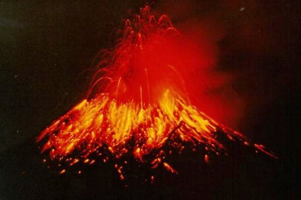
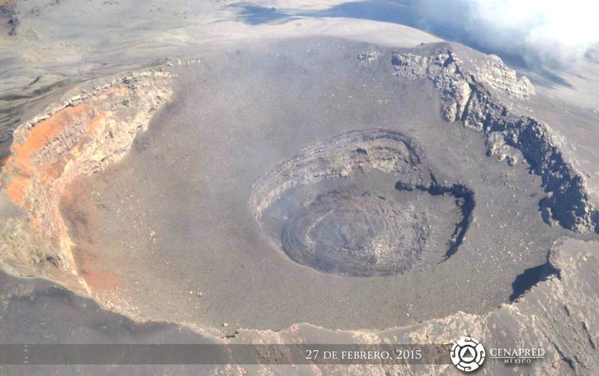
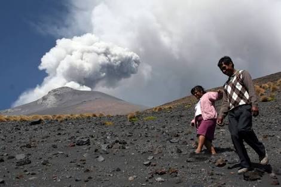
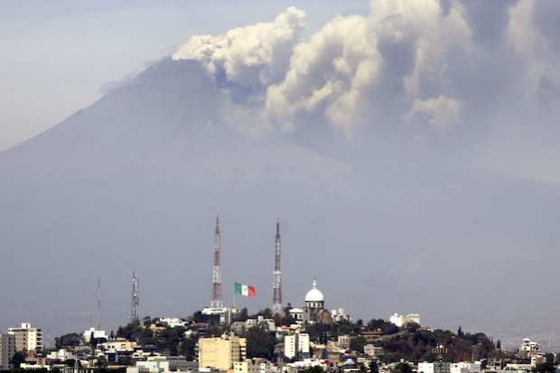
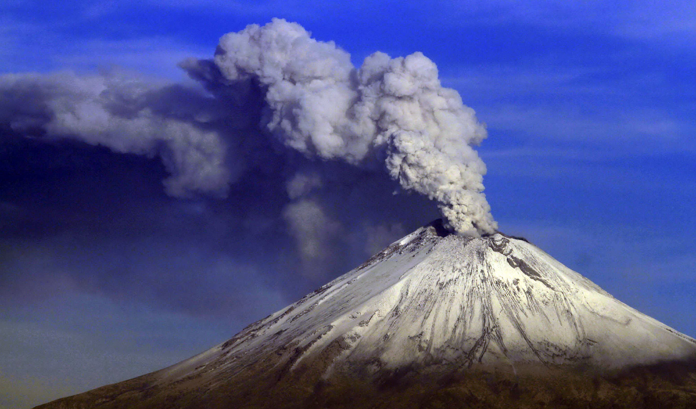

De apariencia casi simétrica, cubre una superficie de 283,192.53 hectáreas y tiene una altura de 5,426 metros sobre el nivel del mar. Posee un cráter elíptico de paredes empinadas con una profundidad de 150 metros desde el labio inferior, un diámetro mayor de 900 metros y un ancho total de 400 x 600 metros. El paisaje en la zona que rodea al Popocatépetl contiene varios tipos de ecosistemas con rica variedad de flora y fauna. Hay bosques mixtos de pino, oyamel y encino, donde coexisten hasta 1,000 especies de plantas. Sobre el cono, principalmente cerca de la boca, se encuentran glaciares que durante los últimos años han disminuido.
el popocatepetl ha sido uno de los volcanes mas activos de mexico .desde 1354 se han registrado 18 erupciones .1947 ocurrio una erupcion para iniciar asi un periodo de actividad
Por su origen náhuatl su nombre significa “montaña que humea”, por su altura es el pico más alto de México después del Pico de Orizaba, y por su cercanía con varias poblaciones humanas se le considera uno de los volcanes más peligrosos del mundo. También se le conoce como “Don Goyo” o simplemente como “Popo”.
.jpg)
El Popocatépetl es un estratovolcán o volcán compuesto. Se le describe como un volcán activo, de hecho, el más activo de México. Descansa al sur de la Ciudad de México sobre los estados de Puebla, Morelos y México, en una provincia fisiográfica nombrada Eje Neovolcánico o Eje Volcánico Transversal, que es una cadena de volcanes que incluye al Iztaccíhuatl, al Paricutín y al Nevado de Toluca, entre otros.
una foto de la leyenda
Popocatepetl, Popocatépetl en español, es un volcán mexicano ubicado a 70 kilómetros al sureste de la Ciudad de México, en los estados de Puebla y la Ciudad de México. Con 5.426 metros, es la segunda montaña más alta del país después del pico de Orizaba, otro volcán. Una erupción poderosa ocurrió el 5 marzo 1996 hasta 22 noviembre 2003 y está en funcionamiento desde el 9 de enero, 2005. Aunque los efectos débilmente explosivos y habiendo localizadas, sus erupciones amenazan a decenas de millones de personas que viven cerca, sobre todo en las áreas urbanas de México y Puebla
toponimia del volcan popocatepetl
Tiene una forma cónica simétrica y está unido por la parte norte con el Iztaccíhuatl mediante un paso montañoso conocido como Paso de Cortés. El volcán tiene glaciares perennes cerca de la boca del cono, en la punta de la montaña. Es el segundo volcán más alto de México, con una altitud máxima de 5500 metros sobre el nivel del mar, sólo después del Citlaltépetl de 5610 msnm.1 2
geologia del volcan
El Popocatepetl es un volcán andesítico compuesto cubierto de glaciares a 60 km al sureste de la Ciudad de México, abarcando los Estados de Puebla, México y Morelos, y al frente volcánico del arco magmático del centro de México (Eje Volcánico Transversal Mexicano). Considerado como el tercer volcán activo más alto del hemisferio norte, y también uno de los más activos del país, este volcán representa un gran peligro para la Ciudad de México al igual que otras ciudades cercanas y pueblos aledaños ante una posible erupción volcánica de gran magnitud
LA LEYENDA DE POPOCATEPTL
La vista que engalana a la ciudad más grande del mundo: la Ciudad de México, está realzada por la majestuosidad de dos de los volcanes más altos del hemisferio, se trata del Popocatépetl y del Iztaccíhuatl. La presencia milenaria de estos enormes volcanes ha sido de gran importancia en las diferentes sociedades que los han admirado y venerado, siendo fuente de inspiración de múltiples leyendas sobre su origen y creación. Entre ellas las más conocidas son dos que a continuación relataremos. Hace ya miles de años, cuando el Imperio Azteca estaba en su esplendor y dominaba el Valle de México, como práctica común sometían a los pueblos vecinos, requiriéndoles un tributo obligatorio. Fue entonces cuando el cacique de los Tlaxcaltecas, acérrimos enemigos de los Aztecas, cansado de esta terrible opresión, decidió luchar por la libertad de su pueblo. El cacique tenía una hija, llamada Iztaccíhuatl, era la princesa más bella y depositó su amor en el joven Popocatépetl, uno de los más apuestos guerreros de su pueblo. Ambos se profesaban un inmenso amor, por lo que antes de partir a la guerra, Popocatépetl pidió al cacique la mano de la princesa Iztaccíhuatl. El padre accedió gustoso y prometió recibirlo con una gran celebración para darle la mano de su hija si regresaba victorioso de la batalla. El valiente guerrero aceptó, se preparó para partir y guardó en su corazón la promesa de que la princesa lo esperaría para consumar su amor. .
LEYENDA
Al poco tiempo, un rival de amores de Popocatépetl, celoso del amor de ambos se profesaban, le dijo a la princesa Iztaccíhuatl que su amado había muerto durante el combate. Abatida por la tristeza y sin saber que todo era mentira, la princesa murió. Tiempo después, Popocatépetl regresó victorioso a su pueblo, con la esperanza de ver a su amada. A su llegada, recibió la terrible noticia sobre el fallecimiento de la princesa Iztaccíhuatl. Entristecido con la noticia, vagó por las calles durante varios días y noches, hasta que decidió hacer algo para honrar su amor y que el recuerdo de la princesa permaneciera en la memoria de los pueblos. Mandó construir una gran tumba ante el Sol, amontonando 10 cerros para formar una enorme montaña.

14,000a Gran erupción pliniana produce lluvias de ceniza y pómez sobre el Valle de México. Large Plinian eruption produce ash and pumice falls on the Valley of Mexico 14,000-5,000a Ocurren varias erupciones menores y al menos cuatro grandes erupciones Several minor eruptions, and at least four large eruptions 3,000b Erupción grande Large eruption 200b Erupción grande Large eruption 800c Erupción grande Large eruption 800c- Después de la última erupción explosiva, la actividad del Popocatépetl ha sido moderada. A lo largo de los últimos 1200 años se han presentado numerosos episodios de actividad similar a la actual. Algunos de ellos están documentados. Since the last large eruption, activity at Popocatépetl has been moderate. During the last 1200 years, many episodes of activity similar to the current one have ocurred. Some of them are well described. 1354c Erupción menor Minor eruption 1363c Fumarolas Fumaroles 1512c Fumarolas Fumaroles 1519 c Erupción moderada seguida de actividad fumarólica. Moderate eruption followed by fumarolic activity. 1530c Termina actividad fumarólica Fumarolic activity ends 1539-1549c Erupción moderada. Explosiones esporádicas moderadas emiten ceniza y pómez Moderate eruption. Episodic explosions produce ash and pumice emissions 1571c Emisiones de ceniza Ash emissions 1592c Fumarolas y emisiones de ceniza. Fumaroles and ash emissions 1642c Fumarolas y emisiones de ceniza Fumaroles and ash emissions 1663c Erupción moderada. Explosiones esporádicas moderadas emiten ceniza y pómez Moderate eruption. Episodic explosions produce ash and pumice emissions 1664c Emisiones de ceniza Ash emissions 1665c Emisiones de ceniza Ash emissions 1697c Fumarolas Fumaroles 1720c Erupción leve y actividad fumarólica Mild eruption and fumarolic activity

En conferencia de prensa, el secretario de Protección Civil, Fausto Lugo, detalló que ante esta situación el gobierno local tiene listas 750 brigadas y se repartirán 500 mil cubrebocas, además de que se vigilarán las delegaciones Milpa Alta, Tláhuac, Xochimilco, Tlalpan, Iztapalapa y Venustiano Carranza. Asimismo, precisó que se establecerían protocolos de actuación en escuelas y edificios públicos, y dio a conocer algunas recomendaciones a la población en caso de caída abundante de ceniza volcánica, entre ellas: cerrar depósitos de agua, proteger ojos, nariz y boca, ya que ésta puede provocar afectaciones al sistema respiratorio. .
Popocatépetl es uno de los volcanes más activos de México. Después de casi 50 años de inactividad, "Popo" regresó a la vida en 1994 y desde entonces ha estado produciendo fuertes explosiones a intervalos irregulares. En las invasiones de los siglos pasados befor Europea, grandes erupciones producidas flujos gigante de lodo que han sepultado a los asentamientos Atzteque, incluso pirámides enteras. .
.jpg)
Debido a la gran actividad que ha reportado el volcán Popocatépetl, las autoridades del Estado de México, Puebla, Morelos y el Distrito Federal han incrementado la alerta ante el riesgo de una erupción .
En un radio de 12 kilómetros se darían las afectaciones más importantes, en cuyo caso se daría el desalojo de los habitares de los municipios más cercanos, los cuales son: Santiago Xalitzintla, San Nicolás de los Ranchos y San Pedro Benito Juárez.
Algunas medidas de prevencion
El Cenapred previó que de continuar el crecimiento del domo de lava en el Popocatépetl, en las próximas horas pudieran presentarse columnas de ceniza y flujos piroclásticos, por lo que se mantendría la alerta volcánica en amarillo fase 3.
Algunas medidas de prevencion
Llamar a las autoridades de Protección Civil a evitar que cualquier persona se acerque a la zonarestringida de 12 kilómetros en torno a 'Don Goyo' y a la población, a mantenerse debidamente informada para evitar ser presa de rumores.
También aconsejó tapar los depósitos de agua, así como cubrir boca y ojos en caso de caída de ceniza.